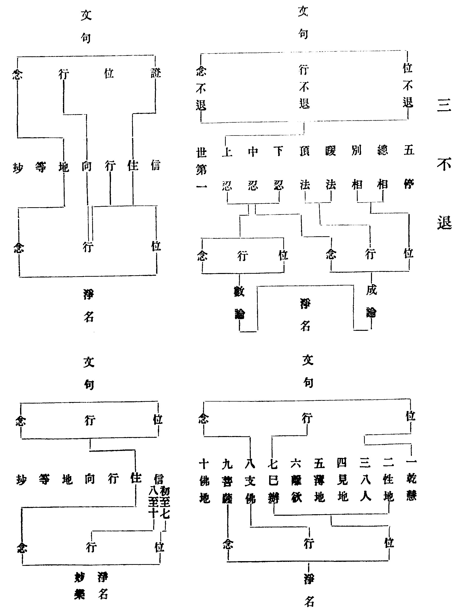

讀教記卷第五
玅玄(五)
十種境界
玅玄(五)(四)普賢觀明無生忍前有十境界即此位也。
籤(五)(廿八)普賢觀云十境界等又云三昧力故六根漸淨具如經說六根淨已為諸如來摩頭授記授記即是入初住也故知六根即是住前十信位也。
四教義(四)(二十)普賢觀經明修大乘人未得無生忍前有十種證相此即是十信之位。
法華三昧儀(第五證相)上品慧根淨相者行者亦於行坐誦念之中身心豁然清淨入深禪定覺慧分明心不動搖於禪定中得見普賢菩薩釋迦多寶分身世尊及十方佛得無閡大陀羅尼獲六根清淨普現色身開佛知見入菩薩位廣說如普賢觀經中。
十種境界者夷攷經文自分十段一見神力化事結云見是事已二見化事變現結云行者見是事已三見普賢說法結云深解義趣四見東方佛結云見一佛已五見十方佛結云見諸佛已六見十方佛土結云既見十方佛已七見佛與地結云見是地已八見座上世尊結云見諸佛已九見釋迦分身結云淨眼根已十見多寶佛塔結云見多寶佛塔已過是則入無生忍位玄文謂之境界四教義三昧儀謂之證相名異義同慧覺謂初普賢化乘白象變現境界乃至第十見靈山席得中持門境界智涌謂初見普賢菩薩境界乃至第十見南方旃檀德佛境界艸菴謂十方諸佛為一境界釋迦二分身三多寶四及六根清淨為十竹庵謂十信心為境界證悟云初標經云樂見普賢菩薩色身者一也樂見多寶佛塔者二也樂見釋迦三也及分身諸佛者四也樂得六根清淨者前別標四後總標六足成十也於四別中結其一曰是名始觀普賢菩薩最初境界復於六中結其一曰是名眼根初境界相四別中普賢既名境界餘多寶等豈更異途六中眼根復名境界餘五可知次釋云從不入三昧但誦持故(止)諸佛如來真實法子是普賢境界次從汝行大乘(止)坐獅子座是釋迦境界次從淨眼根已(止)見多寶佛塔是多寶境界四分身境界者應知普賢多寶釋迦皆有分身佛但作一種境界標之若了一佛分身亦了各各分身故經文中標在三種之後云及分身諸佛者及字兼之佛言巧矣餘六境界經文的然祖源記云一經前後二處摩頭荊溪指後為入住也。
大師位次
玅玄(五)(八)若大乘懺悔發初隨喜圓信之心獲一旋陀羅尼已不可向人說雖種種分別亦不可解況後諸位二乘尚不聞其名豈凡人能說此語有意大師自說己證也。
籤(五)(廿一)一旋陀羅尼者此經列三陀羅尼下文釋云旋假入空名之為旋旋空入假名百千萬億中道實相名為法音今舉三中之初以劣況勝故云一旋約位豎明雖在六根七信已前今通明之乃在初心次文中言此語有意者如智者大師初見南嶽所證之法即此初陀羅尼也何由可向下類人說令他解己所證法耶此即章安述大師已證可知。
玅玄(五)(八)十信之位伏道轉強發得似解破界內見思界內界外無知塵沙如經文云得三陀羅尼但名似道未是真道旋陀羅尼是旋假入真百千旋陀羅尼是旋真入俗法音方便正是伏道未得入中(云云)若入初住得真法音陀羅尼正破無明始名斷道見佛性常住第一義理名圓教無生忍。
籤(六)(一)陀羅尼此云總持此三各能總持諸法如云一空一切空等假中亦然故名為總疏云旋者轉也轉一切法皆悉入空言百千萬億者以從數故故名為假中道法音能作體內方便故也此三祇是一心三觀持一切法通名總持此中即是相似三總持也(云云)若入初住得真法音者謂破無明證真法性。
止觀(一)(二)安禪而化位居五品故經云施四百萬億那由佗國人一一皆與七寶又化令得六通不如初隨喜人百千萬倍況五品耶(云云)大經云是初依菩薩輔行(一上)(十四)安禪而化至五品等者此出臨終行位也(云云)吾不領眾必淨六根以損己益佗但位居五品(云云)然大師生存常願生兜率臨終乃云觀音來迎當知軌物隨機順緣設化不可一準故經云去引證大師五品功多(云云)初品最小其功尚多況第五品耶此證大師居第五品其德深也(云云)若準圓位五品六根並名初依未斷無明名具煩惱亦得名為觀行相似知祕密藏。
別傳(三)思師歎曰非爾弗證非我莫識所入定者法華三昧前方便也所發持者初旋陀羅尼也(五品六根俱是圓方便位品對六根故名前也)。
玅玄(七)(四)能旋假入空即是下中上藥艸等益亦是小樹益得百千旋陀羅尼即大樹益得法音方便陀羅尼是相似實益若有須臾聞即得究竟三菩提即得真實益。
籤(七)(廿七)言旋假入空即三艸等益者五品為小艸七信為中艸上艸亦在五品位中以同三藏未斷惑故八信已上為小樹十信伏無明為大樹初住已上即實事益雖分七益位必在圓。
文句(十)(卅三)三昧與陀羅尼體一而用異寂用為三昧持用名陀羅尼又色身變現名三昧音聲辯說名陀羅尼上品云初得一切色身三昧轉身得一切語言陀羅尼當知音聲猶是色法故言體一用異又舌根清淨名陀羅尼餘根清淨名三昧都是六根清淨法門耳。
玅樂(十)(卅五)上品云初得等者上藥王品云過去名一切眾生喜見菩薩於日月淨明德佛法中得現一切色身三昧後重生其國於淨德王家忽然化生白其父言我先已得解一切語言陀羅尼既云轉身得一切語言即似轉身方得若云我先已得即似指先所得色身三昧即此三昧亦名語言陀羅尼故云猶是色法猶是之言表與前同故此語言與色身但是身口之異豈可現身不能說法但從事別其理必同故作異名消文最便此則圓門三昧陀羅尼必是體同名異三昧從定陀羅尼從慧即不思議之定慧故得互用準下釋中三輪具足又舌下判三昧與陀羅尼祇是真位六根耳。
文句(二)(十五)空觀觀心但有名字即聞持陀羅尼假觀觀心無量心心心數法皆是法門即行持陀羅尼中觀觀心心即實相即是義持陀羅尼。
法界次第(下)一聞持陀羅尼(亦曰名持)二分別陀羅尼(亦曰義持)三入音聲陀羅尼(亦曰行持)。
淨名疏(一)(卅三)(云云)。
或云大師正是五品即十信故得陀羅尼此又妨別傳吾不領眾必淨六根以損己益佗但位居五品之文。
或問文句與法界次第對二持不同者何曰凡百對當隨便取義不可一準法界次第取出假義故以義持對假是中道行故以行持對中文句取行持是行行邊故對假義持是中道義故對中故知二文各有所以籤云約位豎明雖在六根七信已前今通明之乃在初心且初心橫通如何便證空持耶曰豎別約位也橫通約觀也斷惑入位與空相應雖在七信觀心豁解持因靜發不隔初心。
六重本迹
玅玄(七)(七)。
| 理事 | (觀一切法空如實相但以因緣有從顛倒生) | (安樂行) | 迹 |
| 理教 | (是法不可示言辭相寂滅以方便力故為五比丘說) | (方便品) | 迹 |
| 教行 | (諸法從本來常自寂滅相佛子行道已來世得作佛) | (方便品) | 迹 |
| 體用 | (吾從成佛已來甚大久遠若斯但以方便教化眾生) | (壽量品) | 本 |
| 實權 | (是我方便諸佛亦然) | (藥艸喻品) | 本 |
| 已今 | (諸佛法久後要當說真實) | (方便品) | 本 |
釋籤(八)(一末)第六已今已即是迹即指迹門及諸迹教今即是本即指本門本門已前皆名為已踊出已後方名為今故云已說事理乃至權實名之為迹今說事理乃至權實皆名為本故知若無迹中事理乃至權實何能顯於長遠之本又已今之言雖異前五亦是一往指於壽量名為今本若望初本則應又簡已今不同法華已前諸經已今仍屬於迹今經所明乃是真明久遠之本即是已說已今為迹今說已今為本方是實說所以六門引證之文前三引迹後三引本者何然前三復通本之與迹俱有事理乃至教行體用等三通中復別既云本用本權非迹文能顯況以本門為今灼然不可引迹為是義故三引迹文三引本文又前之三文既在於因本因狹故但以迹例本故但引迹門。
玅玄六重本迹唯體用一重是引本文為證餘五皆迹文也而釋籤云前三引迹後三引本者斯葢記主點經玄意實權已今即指迹文為本文耳故云今說已今為本方是實說然則前三不指迹為本何也曰前三既通但以迹例本後三既是通中復別故須指迹為本可看通別兩字此例甚多如文句(一)(三)明本迹一釋初引壽量我成佛已來甚大久遠又方便品云我本立誓願普令一切眾亦同得此道又五百授記品云內祕菩薩行外現是聲聞玅樂(一)(十一)初正引本文次方便下引迹文以迹中文密示本意故若顯露說即迹中本迹下文顯已通得引用又玅樂(三)(卅九)然此八中前七迹門第八本門本雖未至權實理徧故下文云是我方便諸佛亦然故方便之名通於本迹此既玄釋不同消文或云前三是從本垂迹之文後三是發迹顯本之文故云三引迹文或云玄譚大旨不分本迹之殊或云文在本門但文暫偶有同迹門文故或云荊溪文誤或云前三是因為迹後三是果為本或云別含本意故云三引本文。
本迹比決
玅玄(七)(九)若娑婆為墨東行千界方下一點點不點等盡抹為塵一塵一劫復過於是百千萬億那由佗劫彌勒補處以出假種智直數世界尚不能知況數其塵寧當得盡特是如來巧喻顯其長遠之相況以世智巧歷算數耶文云我以佛眼觀彼久遠猶若今也唯佛能知如此久遠皆是迹因非本因也。
釋籤(八)(二)文中云娑婆為墨至寧當得盡者此引迹門化城品文不合引於彌勒等言彌勒不知文在本門或是借於本中之文來此況喻假使迹中三千塵點補處智力亦不能知若定用迹文則應除彌勒等二十五字義理即順師云恐別有意然雖引彌勒語勢稍殊彼本門文但云我等住阿惟越致地於是事中亦所不達今此文中以出假智數世界不知況其塵數若取知塵祇應合用出假智耳是故應用前文說也。
大師引經畢斷云唯佛能知如此久遠則自彌勒補處而下皆不能知乃約意說耳非謂借用本迹文也只因記主作本迹文看神智又以本門彌勒不知塵點之界望不下塵猶是喻迹者非是。
四佛迹因
玅玄(七)(十一)或言昔為摩納值燃燈佛五華奉散布髮掩泥躍身虗空得無生忍佛與授記號釋迦文大品亦云華嚴城內得記義與此同並云斷惑故知通佛行因之相也或言昔為寶海梵志刪提嵐國寶藏佛所行大精進十方佛送華供養既為寶藏佛父又是彌陀之師稱其功德不可思議故知是別圓行因之相。
釋籤(八)(三)昔為摩納者具如瑞應然燈授記得無生忍故知是通佛也昔為寶海梵志具如悲華第二云有菩薩名寂意問佛其餘諸佛世界清淨今佛世尊何故處斯五濁而說三乘佛言淨不淨土皆本願故我於過去恒沙阿僧祇劫此佛世界名刪提嵐劫名善持輪王名無諍念王四天下有一臣名曰寶海是梵志種善知占相時生一子三十二相八十種好諸天常來供養因為作字名曰寶藏後出家成道亦名寶藏轉法輪度眾生已次遊聚落為聖王說法已王請安居王之七寶亦自申供養王有千子亦各三月供養廣如經說乃至滿二百五十年後寶海來至佛所得記作佛十方微塵世界眾生凡是寶海先所化者一時成道寶海次勸輪王發心次勸太子發心次令諸天八部發心乃至三千世界皆發菩提心次於畜生地獄道中一一眾生前現一佛身令得離苦七年之中人天八部無欲心者皆興供養又是彌陀之師者彼授記品彼佛先入三昧現十方淨土集諸菩薩先授寶海記次授彌陀記次授輪王太子記云汝觀人天及三惡道生大悲心斷諸苦惱令住安樂今當字汝為觀世音等輪王太子乃至一切諸天世人莫不皆是梵志勸其發心故皆是師。
瑞應經文玄籤取斷惑邊證通菩薩也而四教儀引布髮掩泥證三藏第二僧祇者不取得忍故也別圓因中以父子言則寶海為寶藏佛父以師資言則寶藏為寶海之師授記品文先授寶海記次授彌陀記則寶藏是彌陀授記之師寶海乃勸彌陀發心之師非謂寶海授彌陀記也籤云寶海次授彌陀記多寶海兩字余撿大慈與聖水古藏中瑞應悲華二經得其說云爾。
四佛成道
玅玄(七)(十二)或言道樹艸座三十四心見思俱斷(云云)此即三藏佛果相也或言道樹天衣為座(云云)此即通佛果成相也或言寂滅道場七寶華為座(云云)此是別佛果成相也或言道場以虗空為座(云云)此即圓佛果成相也。
西域記(轉字函第八卷)菩提樹垣正中有金剛座昔賢劫初成與大地俱起據三千大千世界之中下極金輪上侵地際金剛所成周百餘步賢劫千佛坐之而入金剛定故曰金剛座焉(云云)菩提樹者即畢鉢羅之樹也(云云)。
玅樂(一)(廿四)或云三世諸佛皆色究竟成無上道並別佛相(云云)。
先達謂只一金剛寶座成道四機所見不同而說者昧於轉法輪相以難通佛何處成道嗟夫或問別佛於究竟天成無上道何耶此葢教門權說耳有云此天在六欲四禪十天之頂以表佛居十地之上又以順彼天形頂冠成道又以實報土相別教所化純是菩薩皆是寶冠種種莊嚴。
寂光有相
玅玄(七)(十三)或言其佛住處名常寂光者即究竟土也寂光理通如鏡如器諸土別異如像如飯。
釋籤(八)(五)言常寂光土者又二先標次釋如本門中地踊菩薩下方空中住從地出已亦詣虗空七寶玅塔彼此虗空俱是寂光寂光理通如鏡如器等者譬如諸天共寶器食如止觀第三記。
釋籤(七)(三十)外謂託彼依正色心即空假中即空假中玅故色心體絕唯一實性無空假中色心宛然豁同真淨無復眾生七方便異不見國土淨穢差品而帝網依正終自炳然。
玅樂(十)(十一)唯圓即觀一念三千三諦具足是則一心一切心一身一切身一土一切土一念俱觀若身心土若空假中更無前後故觀成時一心見一切心一身見一切身一土見一切土十方諸佛身中現故故於自心常寂光中徧見十方一切身土。
淨名疏(三)(十一)前三是權後一是實事理惑除正報即得佛果清淨依報即常寂光畢竟清淨。
玅宗(上)(三)問下三淨土既皆有相則可論於金寶等事寂光之淨已全無相如何可說金寶華池及以瓊樹答經論中言寂光無相乃是已盡染礙之相非如太虗空無一物良由三惑究竟清淨則依正色心究竟明顯故大經云因滅是色獲得常色受想行識亦復如是仁王稱為法性五陰亦是法華世間相常大品色香無非中道是則名為究竟樂邦究竟金寶究竟華池究竟瓊樹又復此就捨穢究盡取淨窮源故苦域等判屬三障樂邦金寶以為寂光若就淨穢平等而譚則以究竟苦域泥沙而為寂光此之二說但順悉檀無不圓極問佛無上報是即理之事可論金等究竟寂光是即事之理豈有金等若其同有事理既混如何分於二土義耶答佛無上報是究竟始覺上品寂光是究竟本覺始本既極豈分二體應知二土縱分事理實非有無豈真善玅有而非理耶祕藏之理豈同小空故此事理二名一體以復本故名無上報事也以復本故名上寂光理也故玅樂云修得四德本有四德二義齊等方是遮那身土之相況淨名疏顯將寂光為佛依報故知定執報土有金寶等寂光定無斯乃迷名全不知義矣。
玅宗(中)(七)初尅體立名前三在事故從居人修斷因果而立土名此土屬理故從本體三德為名。
觀音疏記(下)(十七)大乘法性體本常住即是一切色心之源何者小謂色心因見思有故因縛斷其果永亡大說色心因惑生滅不因惑有體是法性見思若盡無明全在則當真諦法性色心方便生滅無明分破本性分顯義當中道法性色心實報生滅無明究盡則復本性常住色心離生滅相常寂光也。
法性之體常住不變寂而常照名為寂光是諸佛之住處是眾生之性本是天下傳佛法之宗極天台所譚玅在於此故得玅宗斷云寂光有相然此寂光法性之體體備依正色心相相宛然法法即性豈同小乘真空法性斷空無體冥寂而已法智尊者玅悟寂光具足諸相故達一家所判法門名義無間高下己佗無不理性本具若譚一性則曰性雖是一而無定一之性故使三千色心相相宛爾豈非達本謂一性具足自佗故說二造則曰理事二造各具三千豈非達本並由理具方有事用故說三身則曰但無隨情染礙之三非無性具微玅身等豈非達體謂平等法身亦具三德故說四土則曰無明究盡則復本性常住色心常寂光也豈非達依正二報在一念故說五住則曰五住正習同在一念即惑為觀豈非達理毒性惡故說六即則曰應知圓家明理已具三千豈非達毗盧身土不逾下凡之一念故以此例之一家教觀體用修性種種名義種種法門無不通達也且寘此事然三乘偏教尚有所證豈圓人所證破壞法體而空寂無相耶若言圓理無相智性故異但空今問此之智性豈非但是覺知性耶別教菩薩何嘗不達但中佛性有覺知耶只由但中不具諸法便異圓理矣學者應知玅宗文有二義初明捨穢究盡取淨窮源以苦域泥沙為三土樂邦金寶為寂光豈非離義次約淨穢平等苦域泥沙全是寂光豈非即義此則若即若離二者有相今更細求只於淨穢平等即義之中便有離義以由圓人所見三土染礙全是寂光之相偏人所見染礙宛爾豈非即中便有離義或問所說寂光有相三諦之中為是何諦曰寂光之體實相玅理也實相之理三諦具足又問玅樂云常寂光土端醜斯亡略記(上之上三)云寂光無相故三皆泯又云以寂光中色質永寂此文云何曰寂光法性玅體之相正是真空冥寂之相端醜斯亡之相亡泯無相之相如是之相名寂光相真善玅有微玅相也雜編曰輔行云常寂光土清淨法身無能莊嚴無所莊嚴為眾生故而取三土故知寂光無染礙之相亦無依正之相評曰此說寂光法身皆是體性法門法法稱性故無能嚴所嚴非謂無相也故知四明一者深得文義二者玅悟法體三者通達義門淨覺反是雜編又曰玅樂明三身說法不說法云法定不說報通二義應化定說若其相即俱說俱不說前所謂法身寂光定無相應身諸土定有相等葢準此也評曰文意因破華嚴新經譯師法身說法且說法自是被機應用法身法體何得有說故曰法定不說今自明寂光性具之相安可例此而欲使性具斷無耶雜編又曰淨名疏云土有事理事即應身之域理即極智所照之境而智理虗寂本無境智之殊豈有能所之別但以隨機應物說有真應故明事理也評曰此約平等性體自行所證本離言說四土皆亡但隨機則說有四土且非寂光定無三土定有如云智理虗寂本無境智之殊亡寂光也豈有能所之別亡三土也。
偏圓權實
玅玄(七)(二十)問中間有偏圓權實而同稱是權者亦應同稱為偏耶答通義則爾別義不然偏圓約法法則已定故偏非圓圓非偏權實約教迹中施設同皆是假故就假論權耳。
釋籤(八)(十)問意者本成已後中間垂迹偏圓權實同稱權者以是迹故故皆是權權即是偏亦可悉皆稱為偏耶次答別義者不例法既已定在本在迹定偏定圓教則不爾在本則權實俱本本故是實在迹則權實俱迹迹故名權。
文句(九)(四)亦不輕慢者不倚圓篾偏重實輕權也。
玅樂(九)(十一)不倚圓者佛尚以異方便及餘深法用助正道後學順教豈可固違習實尚微而篾偏小須順佛旨將護物機問偏圓與權實何所答通則不別別論小異偏圓約教權實約法法即教下所詮通於理智行等。
玅玄云偏圓約法權實約教玅樂云偏圓約教權實約法生起文勢各有所以玅玄乃以偏圓權實同稱為權對偏作並故有通別之答別義不例何者偏圓約法則定權實約教則不爾故知不可通稱為偏也文句既云不倚圓篾偏又云重實輕權故記主因此而問亦有通別之答別則小異徧圓約能詮教權實約所詮法能所有殊故云小異故知二文義意永別艸菴謂玅樂文誤當以玄文為正者失矣。
三不退

玅玄(七)(廿二)華嚴中明阿鞞跋致多明事數。
釋籤(八)(十二)言華嚴明阿鞞跋致多明事數者(云云)又不退位高下不同若是地前行不退位但聞事數知事即理故開權顯實得入初地念不退位能達此權即是實相豈可離此別求實相為對跋致故云初地文句(二)(十二)不退轉者約位行念論不退應四種分別不生三惡道位不退不生邊地諸根完具不受女身即行不退常識宿命即念不退具此名阿鞞跋致地三藏義也若六心已前輕毛菩薩信根未立其位猶退七心已上從初地至六地不退為凡夫二乘名位不退雖正使已盡而未能徧修萬行其行猶退至七地名行不退而猶起二乘念故有念退至八地道觀雙流入法流水名念不退此名阿鞞跋致地此乃三乘共十地之義耳地師云十住是證不退十行是位不退十回向是行不退十地是念不退此是別教義不會此經今所不用瓔珞云初地三觀現前心心寂滅自然流入此亦別教不退今亦不用若華嚴明初住得如來一身無量身具三不退此圓教不退此是一實事今用此判位也。
玅樂(二)(廿一)具此名跋致者阿者無也跋致者退也第三祇時橫得三不退故離五障時三義俱得即是第三僧祇通至百劫通是三不退也至此名為上忍故也次通教位引六心者通教地前無位可論借別位名以通其位即指別教七信已上入乾慧也故云初地至六地方名位不退或指地前假立七賢即以忍位為第六心依小乘位雖云忍位名位不退望菩薩乘猶名為退次別教中許地論師故不破(云云)圓位具三不退者若先以不次寄次第說者則七信名位不退八信已去名行不退初住已去名念不退今從初住已具三德名三不退故云具也般若是位離二死故解脫是行諸行具故法身名念證實境故(云云)。
淨名疏(五)(卅四)但四教各三即位行念若三藏菩薩三不退者三祇行行入煖頂忍即是不退轉地若約數論以忍法三品分三不退若傍成論約四念處為位不退煖頂為行不退忍法為念不退若通教者從性地乃至羅漢六地齊功皆位不退辟支佛地七地齊功菩薩修方便即行不退八地菩薩道觀雙流名念不退若八地與辟支佛齊九地始是念不退也若別教者十住是位不退行向是行不退登地三觀現前即念不退若圓教者十信初心為位不退中心已來為行不退登初發心住即念不退復次十信相似三不退初住分真三不退前三權後一實。
垂裕(七)(十三)荊溪云入煖等者應引俱舍煖必至涅槃頂終不斷善等若通教明三不退中六地齊功等者以與小共故得齊名所言皆者顯乘顯地性地已去皆不退也十信初心等者以十信位俱分初中二心之別八信至十信以為中心。
玅宗(下)(廿二)疏牒阿耨不退釋云道種菩提等以阿耨多羅三藐三菩提翻為無上正等覺斯是行人心之本性所求之果於此不退其位有三若破見思名位不退則永不失超凡之位習種性也伏斷塵沙名行不退則永不失菩薩之行當性種性及道種性也若破無明名念不退則永不失中道正念聖種性也。
夫四教三不退皆約菩薩言而對當位次葢隨文用與爾或問空有二宗對位不同者何曰數論約三祇行成橫得三不退成論約隨功涉位豎得三不退也然則何故玅樂唯對上忍曰數論三忍分對三不退者以由忍法皆三祇滿位故也若玅樂文此取六度已滿之位故當上忍又問三藏七賢並未斷惑云何橫豎得三不退曰此約利根進趣功能而說若鈍根人未免有退又問通三四地既斷見惑亦位不退何故至六地方不退耶曰此約借別名通而說若就當教而三四地亦不退也別圓可知。
讀教記卷第五